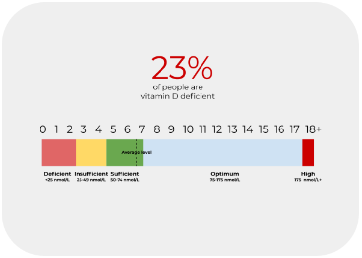
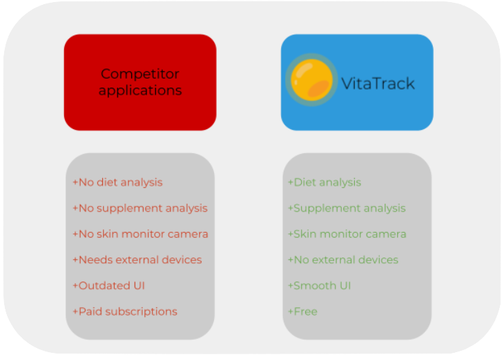

VitaTrack is a dynamic web application aimed at tracking and monitoring a given user’s vitamin D levels. We strive to spread awareness of vitamin D deficiency, as it is more commonplace than the average person would think.
Statistically, one in four adults have a vitamin D deficiency. This means that around 4 million adults in Australia and 1 billion people globally are likely to be deficient, with the majority being unaware of this. This is of large concern as this vitamin is essential for the human body to function, allowing for it to absorb calcium properly, supporting muscle function and bone health. The main way the body usually gains its required levels of vitamin D is mainly through sunlight complemented by some foods, however the 21st century has seen humanity as a whole spending less time outdoors and eating balanced diets.

This is the context in which our application is to be deployed into, hoping to address the undiscussed levels of deficiency commonplace in society.
How it works
Our application makes use of many independent variables to calculate the vitamin D levels of the user. By either downloading or using the online web app, the user has access to a tool which:
1. Detects skin colour
2. Uses age and dietary intake
3. Analyses supplement intake
4. Makes use of geographical data
5. Uses skin exposure and duration information
6. Presents a conclusion based on the previous data
The shortcomings of many applications on the market (which will be discussed later) mainly comes down to inaccuracies caused by limitations of testing. VitaTrack takes a multifaceted approach towards identifying vitamin D deficiency, using the aforementioned numerous steps. Being able to be split into two distinct categories sun and diet, our application is able to thoroughly delve into each category's requirements for a healthy vitamin D level, as well as where the user stands in regards to these levels.
Consisting of skin type and exposure, as well as geographical data, the sun portion of our tool aims to provide accurate analysis and calculations for its user. Skin type and exposure are two largely overlooked components of sun exposure, as different types of skin have varied resistances to UV exposure, as well as the amount of clothing worn determining how much sun this skin receives to begin with. Thus by considering these factors, the application has a sound understanding of what type of user it is dealing with. Additionally, this information is used with the weather/geographical data provided by the application. Many applications do not take into consideration the large variation in UV levels, be it due to place or current weather conditions. Thus by considering the conditions the user has been exposed to, as well as their personal exposure information, VitaTrack can provide a level of accuracy that is unmatched.
Similarly, VitaTrack’s other features can be classed as dietary analysis tools, all of which are used to gain a comprehensive understanding of other factors excluding direct sun exposure. It is well known that common foods consumed can have some effect on vitamin D levels. With that being mentioned, VitaTrack provides quick and easy entry fields for previously consumed food. Foods such as fatty fish, eggs and milk all contain amounts of vitamin D that can be considered to produce a calculation that is accurate. Due to this, our tool aims to be accommodating to users who are encouraged to enter their dietary information. This ties directly into the supplement section of the tool, which consists of a similar format. Supplements are becoming increasingly common in the diet of most Australians, with over 8.3 million of us consuming them on a regular basis. This is important to factor into the applications calculations, as vitamins can have a large influence on an individual's vitamin D levels
Determining an individual’s vitamin D levels is a complex process that needs to consider many factors. VitaTrack aims to use the aforementioned tools and present them in a sleek format for individuals to gather an understanding of their vitamin D levels. It is through our unique approach that VitaTrack is set to be a strong contender in the vitamin monitoring app market.
The market
VitaTrack aims to be an edge above its competition through its thorough user analysis. Currently, there exists many applications similar to VitaTrack (DMinder, QSun and SunDay to name a few), however most do not consider factors besides sun exposure. This means that these applications are not providing the most accurate levels of analysis, as factors such as diet and supplements can majorly sway an individual’s vitamin D levels. The only application to avoid being grouped into this category is SmarTest Vitamin D, however this application is limited by needing an external device for a blood test. This is inconvenient to the user and may lead some to either just go to a doctor instead, or simply give up using the application.
Furthermore, VitaTrack seeks to make itself user friendly, with interactive UIs that allows for quick and easy navigation. Not present in many of the applications previously mentioned, modern and proper application layout design draws the line between applications that get results and those that are labeled as “too confusing” and “too clunky to use”. Our team believes that by having polished interfaces and proper error management, we will maintain a user base that is able to consistently rely upon VitaTrack for accurate results and information. 
About us
We are a group of 6 computer science students from the University of Wollongong, Australia. All of us have experience in the field, with this being an opportunity for us to demonstrate our knowledge and make a tangible product from it. The majority of the technology used in the development of this application is free to use and open source, meaning that there is minimal reliance on other paid services. This application is a project created to meet the needs of an outside third party, who is in the medical field. From the creation of this application, we hope that only can it be used by our client for research, but also by the general public to inquire, understand and become aware of the commonality of vitamin D deficiency.